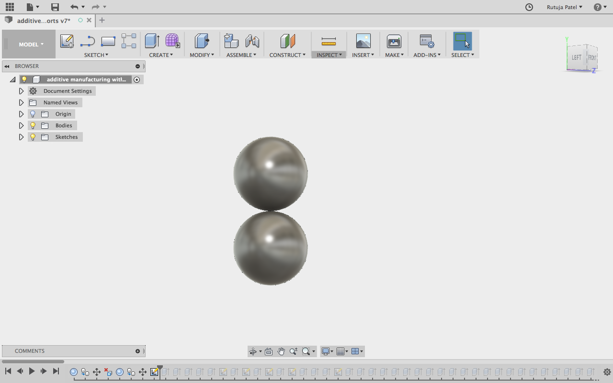

Week 6 | 3D Scanning and Printing | Feb 21
Fab Academy 2018 | Archive
3D Printing
3D printing is any of various processes in which material is joined or solidified under computer control to create a three-dimensional object,[1] with material being added together (such as liquid molecules or powder grains being fused together). 3D printing is used in both rapid prototyping and additive manufacturing (AM). Source: Wikipedia
3D Scanning
3D Laser Scanning is a non-contact, non-destructive technology that digitally captures the shape of physical objects using a line of laser light. 3D laser scanners create “point clouds” of data from the surface of an object. In other words, 3D laser scanning is a way to capture a physical object’s exact size and shape into the computer world as a digital 3-dimensional representation.Source: laserdesign
3D Printing
For 3D printing we are using Ultimaker 2+ at Fablab CEPTYou can find the pecification of the printer from here.
For 3D printing I had to make something that can only be made by additive manufacturing so I decided to make a rectangular cuboid with two spheres in it. The spheres were made such that the it doesn't come out of the cuboid.
I made this design in Fusion 360. The commands I used are as below:
- Sphere
- Extrude
- Line
For keeping a object into print, all the objects must be joined so I reated a 0.4mm thin layer and joined the spheres with it. I used cura for slicing the sketch, it took 1hr to print.
3D Print
After printing the model it looked something like this. The sphere's were not perfect from the bottom and the upper line of 40cm didn't print properly. It was in air so it didn't print properly. This happened because the spool took time to cool down.
I tried cutting it shapeing it in a better way by cutting it a bit, but still looked improper. The mistake I did was that I didn;t give any supports to the model so it could not print properly. It took 1.5 hr in printing. I had to give this thin layer supprort bucause it wont print if all teh objects didn't join properly.
After cutting, the model looked a bit better.
Printing my flute stand
I decided to print my flute stand which I was going to use in my final project. I printed the model which I made in my Week 3 assignment. The print was perfect and also coud hold my flute perfectly.
Making a stand for servo
Also I had to make a stand for my servo to hold it properly.
3D Scanning
I have used a mobile application SCANN3D for scanning.
- Encircle your target:
To make a good model you need to move around the object.Follow a circular path and stop when taking pictures. -
Glue regions:
Make sure each segment of your model is present in at least two pictures. The green lines on the tree stump indicate the glue regions - areas seen on at least two images. The glue regions tie your model together: you need to cover the entire object with glue. -
Distance Matters:
Taking images from too far won’t result in good models - the target has to make up a significant portion of the image!
Aim for a distance where you need 15-20 images to cover your target with glue! -
Lighting Matters:
Spotlights, hard shadows, and uneven lighting generally results in incomplete models Diffuse, even lighting, and soft shadows usually result in good models. -
Be mobile:
It is insufficient to move the target object: You need to move the device itself: you need to be mobile! -
Moving Targets:
Moving targets cannot be made into models. If you intend to model living beings, they need to remain still. -
Suboptimal Targets:
Reflective, transparent and untextured, homogeneous objects do not make a good model
3D scanning and printing
As you can see the sphere in the printer is moving as the support is not givenI made cylindrical support for the sphere as you can see in the video
Commands I used
- Rectangle - Make the outer area
- Extrude
- Sphere - for making sphere
- Move - to move the cylindrical supports
- Circle << Extrude - for making cylindrical supports
Notes to draw the model: First I made two sphere, go to Create << sphere. I made two sphere with 20mm diameter.
I made a rectangle with 8mm length and 4mm width and took offset of 2mm outside offset.
Next step was to adjust the design so the spheres did not come out and make a 0.4 mm base for the design.
Make circles in the bottom plane and extrude it to the opposite side and join them below the sphere.
Now last step is to make support for the length.

Printing the model
This time also the print was not successful. As you can see the border line was not perfect
This print was also not approved. My local instructor suggested me to make pyramid supports for the print and having more number of supports. I made that too and the print was successful.
Commands I used
- Sphere - for making the sphere
- Line - for making the outer cage and triangle
- Revolve - for making conical support
- Rectangular Pattern - for making the supports
Process
- Make a sphere with 20 mm diameter
- Make a triangle with the help of line command and make a cone with the help of revolve command from the CREATE tab.
- Make multiple cones surrounding the cones.
- Now copy and paste the sphere and move it on the other side.
- Make the same conical structures below it or you can copy and move it.
- With line command make a rectangle surrounding two spheres i.e length 40 and width 20.
- Make sure a thin layer of 0.4 mm is touching the cone structures.
- I made the thickness of the cage as 5.5mm and arranged the supports far from the sphere.
- I made the supports 1mm thick and 4mm width.
Box
- The additive manufacutring madel was quite challenging.
- I increased my CAD Designing skills
- Scanning part was new for me